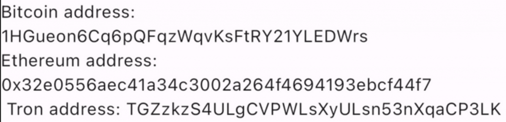
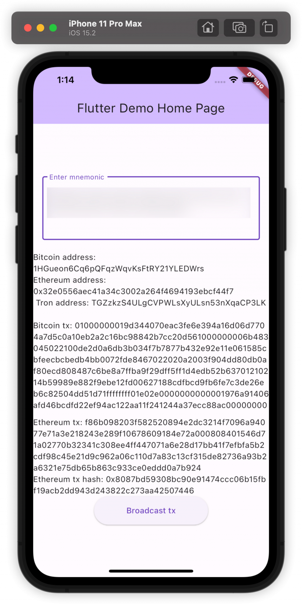

今天我們正式進入到 Web3 與 App 開發的主題，使用的框架/語言是 Flutter/Dart，對於 Flutter 及 Dart 不熟悉的讀者可以先參考官方的介紹與教學：https://flutter.dev/ 。接下來會跳過初始化一個 Flutter App 的過程，直接進入錢包相關功能的實作。今天的目標是做到多鏈錢包的管理，包含 Bitcoin, Ethereum, Tron 的多鏈錢包，以及在這些鏈上如何發出交易。之前的內容較專注在 Ethereum 鏈的機制，因此也會稍微介紹 Bitcoin, Tron 與 Ethereum的不同。
要實作 Bitcoin, Ethereum, Tron 的多鏈錢包，最方便的作法還是使用 HD Wallet，因為這樣使用者只要記一個註記詞，就能用他計算出 Bitcoin, Ethereum, Tron 鏈的錢包（不熟悉的讀者可以回去看 Day 10 的內容），而且每條鏈還能產生多個錢包，可以說光一個註記詞就能儲存一個人在任何區塊鏈上的資產了（只要任何新的公鏈都選擇好在 BIP-44 標準中要用什麼 Coin Type 即可）
可以安裝 bip39 跟 flutter_bitcoin 套件來透過註記詞產生 HD Wallet，並按照 BIP-44 標準查到 Bitcoin, Ethereum, Tron 各自對應的 Coin Type 為 0, 60, 195，因此就可以 Derive 出對應的公私鑰：
[code] import ‘package:bip39/bip39.dart’ as bip39; import ‘package:flutter_bitcoin/flutter_bitcoin.dart’;
final mnemonic = bip39.generateMnemonic(strength: 128);
final seed = bip39.mnemonicToSeed(mnemonic);
final hdWallet = HDWallet.fromSeed(seed);
btcWallet = hdWallet.derivePath("m/44'/0'/0'/0/0");
ethWallet = hdWallet.derivePath("m/44'/60'/0'/0/0");
tronWallet = hdWallet.derivePath("m/44'/195'/0'/0/0");[/code]
這時 btcWallet, ethWallet,
tronWallet 都是 HDWallet 這個 class
的物件，裡面儲存這個錢包的公鑰跟私鑰，但要計算出錢包地址的話還需要做一些轉換，因為公鑰跟私鑰都只是長度
256 bits 的 hex 字串。前面 HD Wallet 使用的套件是
flutter_bitcoin ，預設他就有個 address
欄位可以拿到 Bitcoin 的地址：
[code] final btcAddress = btcWallet.address;
[/code]
再來是 Ethereum 的地址，web3dart 是方便我們產生與管理 Ethereum 錢包、跟區塊鏈互動、發送交易的套件，裡面也提供了從 private key 轉成以太坊地址的 function：
[code] import ‘package:web3dart/web3dart.dart’;
final ethPriKey = EthPrivateKey.fromHex(ethWallet.privKey!);
final ethAddress = ethPriKey.address.hex;[/code]
至於 Tron 則可以使用 wallet 套件來作轉換：
[code] import ‘package:wallet/wallet.dart’ as wallet;
final tronPrivateKey =
wallet.PrivateKey(BigInt.parse(tronWallet.privKey!, radix: 16));
final tronPubKey = wallet.tron.createPublicKey(tronPrivateKey);
tronAddress = wallet.tron.createAddress(tronPubKey);[/code]
結果如下：

這三條鏈從 private key 轉成地址的定義都不一樣：
因為生成方式不同，Bitcoin 地址通常會以 1 或 3 開頭（在一些比較新的地址版本如 SegWit 或 Taproot 可能會是 bc1 開頭），而 Tron 則是 T 開頭，這樣也有個好處是看到地址就能大致知道是什麼鏈的地址。
有了私鑰與地址後就可以來實作交易簽名與送出。Ethereum
的作法大家應該已經熟悉，指定好 from address, to address,
value（要送出多少 ETH）, chain ID 後用 web3dart 提供的
signTransaction() ，會自動從鏈上查詢當下的 gas price, gas
limit, nonce 等資訊，簽名完後就可以使用
sendRawTransaction() 送出交易：
[code] const alchemyApiKey = ‘…’; final web3Client = Web3Client(‘https://eth-sepolia.g.alchemy.com/v2/${alchemyApiKey}’, Client());
Future<String> signTransaction({
required EthPrivateKey privateKey,
required Transaction transaction,
}) async {
try {
final result = await web3Client.signTransaction(
privateKey,
transaction,
chainId: 11155111,
);
return HEX.encode(result);
} catch (e) {
rethrow;
}
}
// sign and send transaction
final ethPriKey = EthPrivateKey.fromHex(ethWallet.privKey!);
final tx = await signTransaction(
privateKey: ethPriKey,
transaction: Transaction(
from: ethPriKey.address,
to: EthereumAddress.fromHex("0xE2Dc3214f7096a94077E71A3E218243E289F1067"),
value: EtherAmount.fromBase10String(EtherUnit.gwei, "10000"),
),
);
final txHash =
await web3Client.sendRawTransaction(Uint8List.fromList(HEX.decode(tx)));
print(txHash);[/code]
前面一樣要先建立跟 RPC node（也就是 Alchemy）的連線才能從鏈上查詢當下的資料，整體程式碼應該算好理解。
再來由於 Tron 的簽名與發送交易在 Dart 中還沒有好用的 library，這裡先只介紹比特幣的交易簽名機制。對 Tron 交易機制有興趣的讀者可以參考官方的 JS Library 中的作法：https://developers.tron.network/v3.7/docs/tronweb-transaction-builder
Bitcoin 的設計方式跟 Ethereum 不太一樣，在 Ethereum 中是使用「帳戶模型」，意思是每個地址都是一個帳戶，區塊鏈中直接紀錄了每個帳戶的 ETH 餘額，並且每個帳戶都對應一個 Nonce 代表他已經發送過幾個交易。
但 Bitcoin 中是使用「UTXO 模型」，也就是 Unspent Transaction Output （未花費的交易輸出）的簡稱，例如 B 曾經轉給 A 一個 BTC、C 曾經轉給 A 兩個 BTC，這時區塊鏈上會紀錄 A 有兩個 Unspent Transaction Output：1 BTC 跟 2 BTC，用這些 UTXO 的總和可以算出 A 的餘額有 3 BTC。
假設接下來 A 要送出 2.5 BTC 給 D，那麼這個交易的結構會長得像這樣：
[code] Inputs: - 1 BTC from B - 2 BTC from C
Outputs:
- 2.5 BTC to D
- 0.5 BTC to A[/code]
這邊忽略了礦工費，所以實際 A 剩餘的 BTC 數量會少於 0.5。所以 A 其實是拿他過去的兩個 UTXO 來組合出 2.5 BTC 的 output 送給 D，再把找的零錢（0.5 BTC）給自己，來完成這筆 UTXO 交易。因此一個 Bitcoin 的交易可以有任意多個 inputs / outputs，而越多 inputs / outputs 也就需要越高的 gas fee。Bitcoin 是用 Satoshi per Byte 乘上 Transaction Bytes 來算出最終的礦工費（Satoshi 是比特幣的最小單位，1 Bitcoin = 10^8 Satoshi），可以各自想像成 Ethereum 中的 Gas Price 以及 Gas Limit，詳細可以參考官方的解說：https://en.bitcoinwiki.org/wiki/Transaction_commission
有了這些概念後，就可以來看範例的 Bitcoin 交易簽名如何實作：
[code] String sampleBitcoinTx(HDWallet btcWallet) { final txb = TransactionBuilder(); txb.setVersion(1); // previous transaction output, has 15000 satoshis txb.addInput( ‘61d520ccb74288c96bc1a2b20ea1c0d5a704776dd0164a396efec3ea7040349d’, 0); // (in)15000 - (out)12000 = (fee)3000, this is the miner fee txb.addOutput(‘1cMh228HTCiwS8ZsaakH8A8wze1JR5ZsP’, 12000); txb.sign(vin: 0, keyPair: ECPair.fromWIF(btcWallet.wif!)); return txb.build().toHex(); }
[/code]
只要使用 flutter_bitcoin 套件提供的
TransactionBuilder() 並加上對應的 inputs, outputs
即可。但以上的程式碼還不夠完整，因為有個問題是要如何知道當下地址有哪些
UTXO 來作為 inputs？這個就需要使用第三方的 API 來查詢了，像 QuickNode 跟 Blockchair
等服務都有提供，完整實作就不在這裡展開。
有了以上程式碼就可以來完成一個簡單的應用：輸入註記詞後產生對應的 Bitcoin, Ethereum, Tron 地址、簽名出 Bitcoin, Ethereum 的交易，以及送出 Ethereum 的交易。這裡沒有示範送出 Bitcoin 的交易是因為還需要領取測試網上的幣，讀者可以自行嘗試。以下是這個應用送出 Ethereum 交易後的樣子：

今天我們稍微介紹了 Bitcoin, Tron 與 Ethereum 的差別，包含地址與交易的生成方式，並使用 Dart 來實作他們。完整的 Flutter 應用在這裡，有安裝好 Flutter 以及 Android/iOS 模擬器的讀者可以使用以下指令把他跑起來：
[code] flutter pub get flutter run
[/code]
今天的知識已經足以在 Flutter 中實作一個基本的多鏈錢包了，而且只要修改 HD Wallet 的 Derive Path 參數的最後一個數字，就能產生一條鏈上的多個錢包。接下來我們會介紹 Flutter 中如何發送 Token Transfer 的交易，以及 Gas Fee 的進階設定方式：EIP 1559。